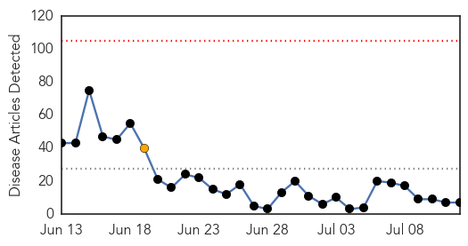
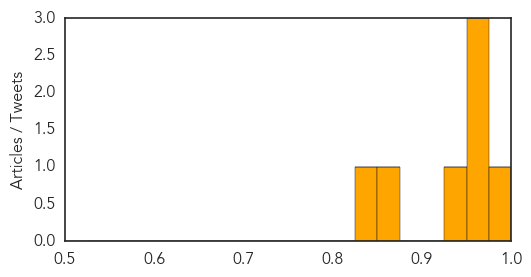
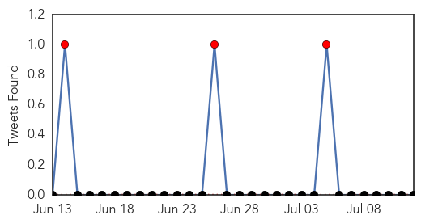
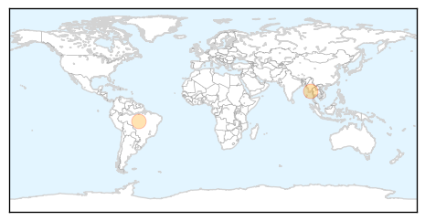

MERS
30-Day Web Trend
0 alerts, 1 warnings

30-Day Twitter Trend
0 alerts, 0 warnings

Article Locations

Article Confidences
Top Articles:
- 0.986
- WHO commends Philippines handling of imported MERS case, Malacanang welcomes comment
- 0.973
- (LEAD) No new MERS cases reported in S. Korea in 7 days
- 0.962
- (LEAD) No new MERS cases reported in S. Korea in 7 days
- 0.958
- Palace welcomes WHO comment on MERS-CoV response
- 0.926
- Not too late for flu jab
- 0.856
- July 11 2015
- 0.837
- Palace welcomes WHO’s recognition to PHL for rapid strong response to MERS-CorV
Top Tweets:
-
No tweets found for Jul 12, 2015
Dengue Fever
30-Day Web Trend
6 alerts, 5 warnings
30-Day Twitter Trend
3 alerts, 0 warnings

Article Locations
Article Confidences

Top Articles:
Top Tweets:
-
No tweets found for Jul 12, 2015